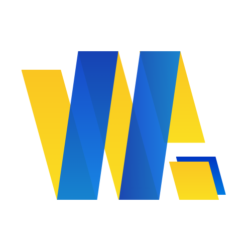
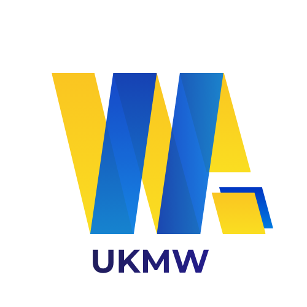
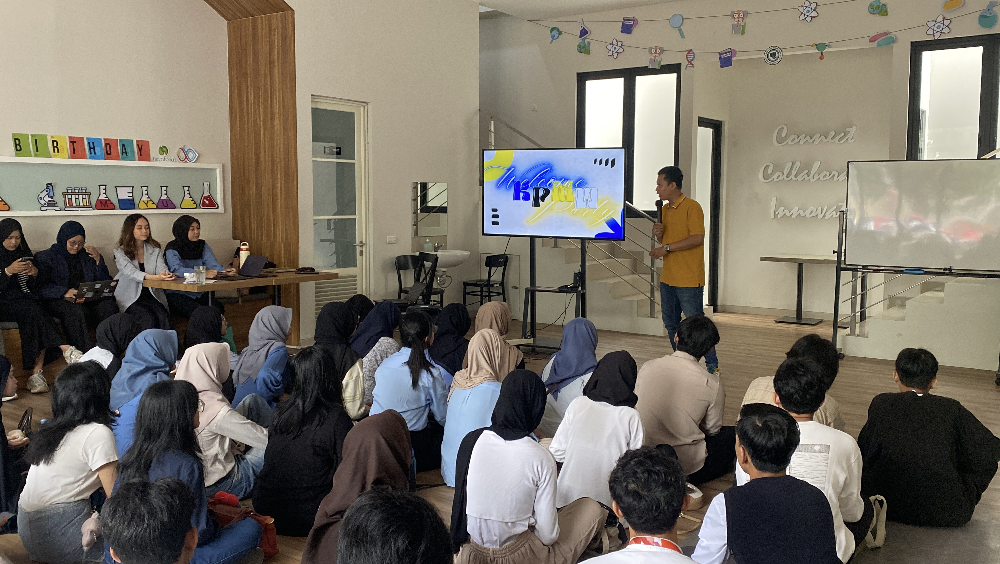
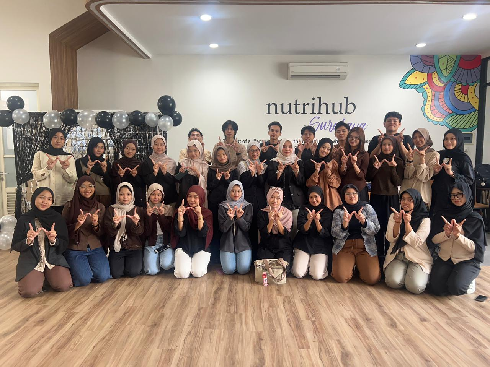
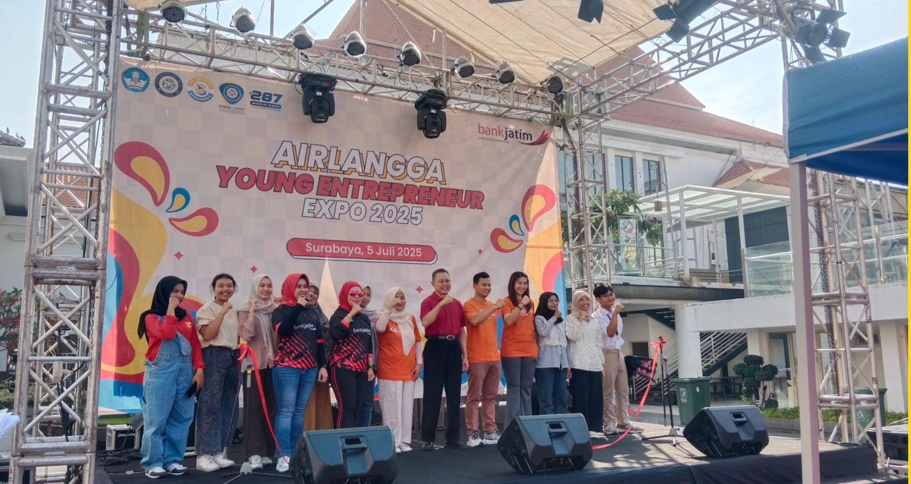
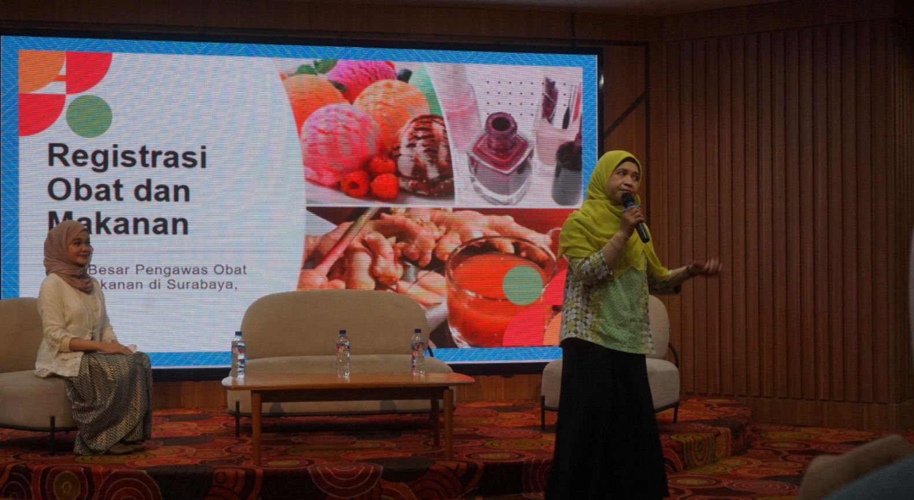
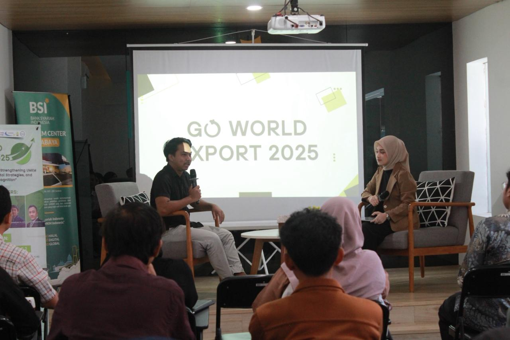
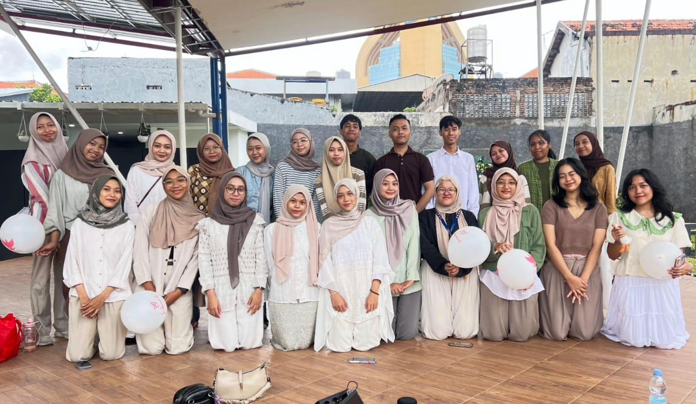
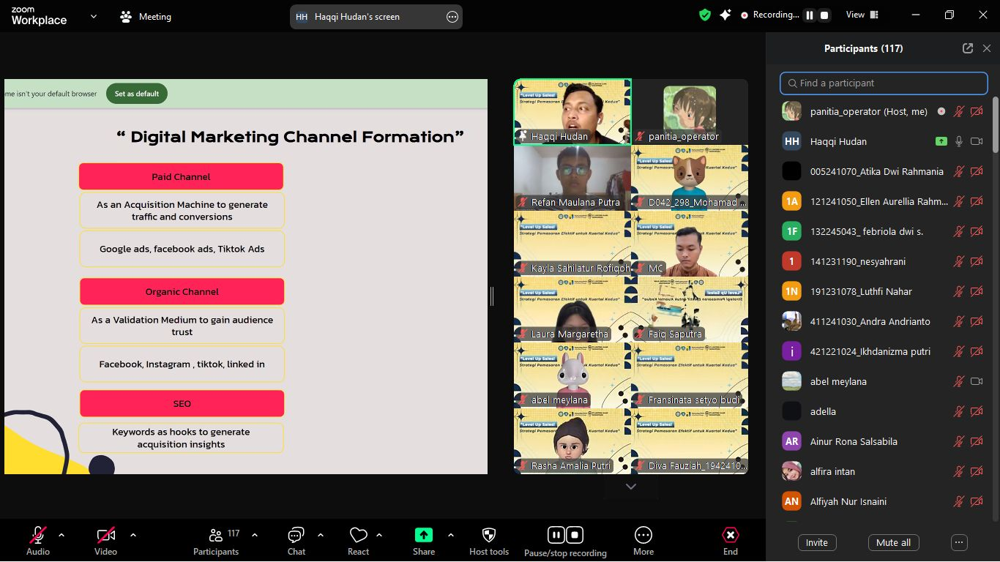

UKM WirausahaLevel Up Your Business
Wadah utama pembinaan wirausaha mahasiswa Universitas Airlangga yang terpadu, berkelanjutan, dan berorientasi pada pengembangan wirausahawan yang handal, adaptif, serta berdaya saing global.

About UKMW
UKM Wirausaha Unair merupakan wadah bagi mahasiswa Universitas Airlangga untuk berkembang dalam dunia kewirausahaan melalui pembinaan, kolaborasi, edukasi, dan penguatan jejaring usaha.

Vision & Mission
Sebagai wadah utama pembinaan wirausaha mahasiswa Universitas Airlangga yang terpadu dan menerapkan prinsip keberlanjutan sehingga mampu menghasilkan wirausahawan handal, adaptif, dan berdaya saing global.
Divisions
UKM Wirausaha Unair memiliki beberapa divisi yang saling mendukung dalam menjalankan program kerja organisasi.
Fokus pada pengembangan usaha, pelatihan, dan dukungan program bisnis mahasiswa.
Berperan dalam relasi, kolaborasi, komunikasi eksternal, dan kegiatan publikasi kerja sama.
Mengelola administrasi, keuangan, dan kebutuhan internal organisasi.
Mengelola media sosial, website, branding, dan publikasi visual organisasi.
Mendorong riset, penulisan, studi lapangan, dan penyebaran informasi lomba.

Featured Programs
Beberapa program unggulan UKM Wirausaha Unair dirancang untuk mengembangkan skill, wawasan bisnis, pengalaman organisasi, serta kesiapan anggota menghadapi tantangan dunia usaha.
“Level Up Your Business”
Our Programs
Berbagai program kerja dirancang untuk mendukung pengembangan kewirausahaan mahasiswa Universitas Airlangga secara aktif dan berkelanjutan.

Wadah bagi mahasiswa yang memiliki minat dan bakat kewirausahaan melalui bantuan modal usaha, bootcamp, mentoring, serta pameran.

Program untuk meningkatkan pemahaman UMKM tentang pentingnya legalitas usaha agar bisnis memiliki dasar hukum yang jelas.

Program yang memberikan pemahaman ekspor melalui kegiatan dan narasumber ahli agar peserta memahami pasar global.

Agenda temu bulanan untuk belajar, berbagi progres, kolaborasi, dan presentasi mini project.

Kegiatan webinar yang dirancang untuk memberikan edukasi dan wawasan kepada mahasiswa mengenai kewirausahaan, peluang bisnis, serta pengembangan usaha di era digital.
More Programs